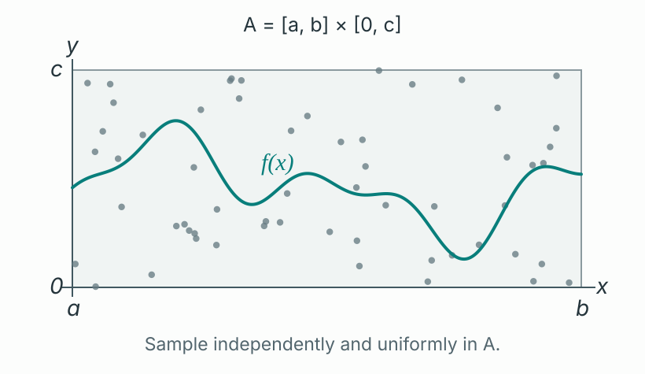
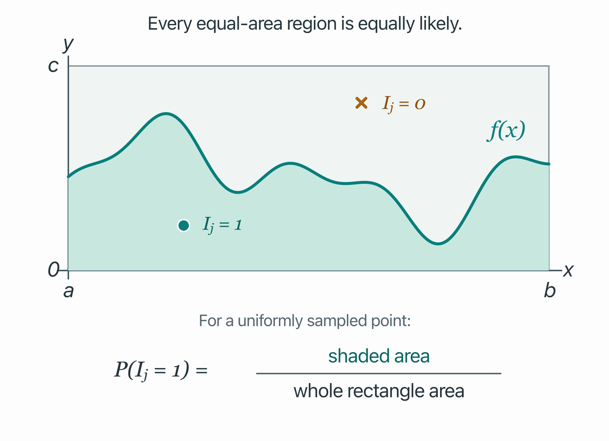

Research Log
When the VAE Meets Monte Carlo
The Question
Why do we need a Monte Carlo estimate of an expectation?
Short answer: we need it when calculating the expectation exactly is impossible or too expensive.
Why I Care
Today, I’d like to write a concise and focused entry about Monte Carlo estimation. I believe this is a topic many ML practitioners overlook or treat as a minor detail. But let’s not forget that the devil is in the details.
Certainly, when reviewing the VAE, I got confused about the many layers of “averaging” that were going on: across pixels, across latent samples, across images, across mini-batches, across training steps. So I thought it would be worth writing about it.
Besides, coding in the time of AI agents could make us laxer about the particulars. But, paraphrasing François Chollet, delegating coding is fine; delegating understanding is not.
Now, concretely, when training probabilistic models, we face instances when computing the whole expectation is intractable. So we do the best we can: we draw samples, calculate a result for each, and average them, a.k.a. Monte Carlo estimation. I wrote it deliberately in simple terms so Monte Carlo, at least in this context, doesn’t sound intimidating.
Setup and Definitions
Law of Large Numbers
As a quick recap of the law of large numbers, let \(X_1,X_2,\ldots\) be independent and identically distributed (i.i.d.) random variables with
The sample mean is defined as
The law of large numbers (LLN) says that, as \(n\) tends to infinity, the sample mean converges to the true mean \(\mu\).
VAE Setting
Apart from that, I want us to have in mind a concrete VAE iteration that we’ll revisit later.
- We get a sample from our data. For concreteness, assume we are working with the MNIST dataset and take an image of the digit 2, which we’ll call \(x\).
- We send this image of a 2 through the encoder.
- The encoder outputs a mean vector and a variance vector.
-
For illustration, we sample five independent latent vectors from
a normal distribution parameterized by the provided mean and
variances:
\[ Z^{(k)}\overset{\mathrm{i.i.d.}}{\sim} \mathcal{N}\!\left( \mu_\phi(x),\operatorname{diag}(\sigma_\phi^2(x)) \right), \qquad k=1,\ldots,5. \]
- We then send these five samples through our decoder and get five outputs.
- We compare each output of the decoder against our original image, the 2, using mean-squared error (MSE) as our reconstruction loss in this example. We also have a KL divergence term in our loss, but that term is not relevant in this post.
- We then average the five losses: we add them up and divide the result by five.
I wrote the process for one image, but we usually do it in batches and at different training steps. Did you notice the Monte Carlo estimation? I wrote out the iteration this way to highlight it!
Minimal Derivation
For our derivation, I’d like to start with a problem I found in Stat 110. I really enjoyed this problem, and I think solving it is a wonderful exercise.
Before looking at the answer, I encourage you to try it yourself, especially if this is the first time you’ve seen it.
It goes like this:
Let \(f\) be a complicated function whose integral \(\int_a^b f(x)\,dx\) we want to approximate. For \(a<b\) and \(c>0\), assume \(0\leq f(x)\leq c\) on \([a,b]\). Draw \(n\) independent points \((X_j,Y_j)\) uniformly from the rectangle \(A=[a,b]\times[0,c]\). How can we use these points to estimate the integral, and show that the estimate converges to its true value as \(n\to\infty\)?
Adapted from Stat 110, Strategic Practice 11, Problem 5.

Solution
The key idea to solve this problem entails working with indicator random variables. But don’t worry if you are not familiar with that concept.
For each sampled point \((X_j,Y_j)\), we compare its height \(Y_j\) with the curve’s height \(f(X_j)\). We’ll just define a variable \(I_j\) such that
Then the expected value of each indicator is
The probability that point \(j\) lands below the curve equals the ratio of the area below \(f(x)\) to the area of the rectangle \(A\).

We know that
Thus, it follows that
And by the law of large numbers, the empirical success frequency converges to the true success probability as \(n\) increases:
So
More precisely,
Watch the Estimate Take Shape
Try the indicator trick below. Increase the number of samples, then start a new random run and compare the paths toward the same area.
What I Think I Learned
Monte Carlo estimates are powerful tools when computing the exact value is infeasible, as shown in the previous area problem. And now we can connect that to the VAE setting presented in this post.
In the area problem, each sampled point gave us either zero or one. In the VAE, each sampled latent vector gives us a reconstruction loss. In both cases, we average those values to estimate an expectation.
After getting the mean and variances from the encoder, we use our Gaussian distribution to sample latent vectors, then compare their decoded reconstructions with the original image. But unfortunately, this decoder involves a complex, nonlinear function, so we generally can’t calculate the expected reconstruction loss analytically.
Here:
- \(x\) is our original image, with \(d\) pixels.
- \(x_i\) is the value of pixel \(i\).
- \(Z^{(k)}\) is the \(k\)-th sampled latent vector.
- \(m_\theta\) is the decoder with parameters \(\theta\), and \(m_{\theta,i}(Z^{(k)})\) is its reconstructed value for pixel \(i\).
- \(R_k\) is the reconstruction MSE for that latent sample: we average the squared errors across the \(d\) pixels.
For \(K\) latent samples, we then have
Here, \(q_\phi(z\mid x)\) is the encoder’s distribution over latent vectors for the input image \(x\); \(\phi\) denotes the encoder’s parameters. In our example, it is the Gaussian with mean vector \(\mu_\phi(x)\) and diagonal covariance \(\operatorname{diag}(\sigma_\phi^2(x))\). The expectation averages the reconstruction loss over that distribution. In the earlier iteration, \(K=5\).
Keep \(x\), \(\phi\), and \(\theta\) fixed while drawing independent latent samples, and assume the expected reconstruction loss is finite. Then, by the LLN,
Averaging across pixels gives us one reconstruction loss. Averaging across latent samples estimates its expectation for one fixed image. Averaging across images in a randomly sampled mini-batch estimates an average over the data; across training steps, the model itself changes.
That is where the VAE meets Monte Carlo: we sample latent vectors, calculate their reconstruction losses, and average them to estimate an expectation we cannot usually compute exactly.
Open Questions
- What’s the effect of batch size on the Monte Carlo estimation?
- How many samples are “good” for doing the Monte Carlo estimation? How could we know that?
- Can we tweak the decoder so we can compute the expectation analytically?
References
- Joe Blitzstein, Stat 110, Lecture 29: Law of Large Numbers and Central Limit Theorem
- Joe Blitzstein, Stat 110, Strategic Practice 11: Law of Large Numbers / Central Limit Theorem, Problem 5
- Diederik P. Kingma and Max Welling: Auto-Encoding Variational Bayes
- The MNIST database of handwritten digits
- François Chollet: “Delegate coding. Never delegate understanding.”
- Wikipedia: The devil is in the details